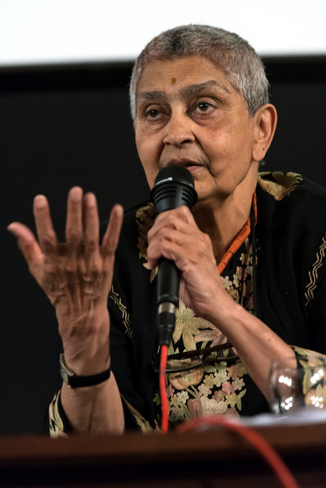
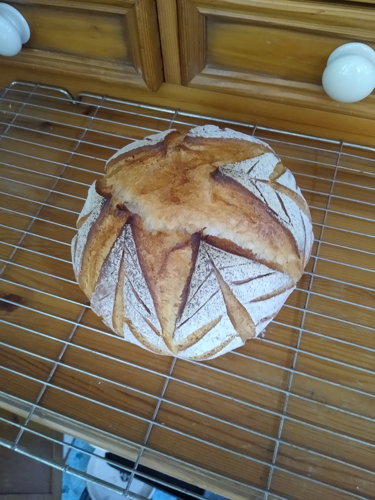

Academic Interests
 I am interested in work which explores things which are often thought of as private and immutable, such as gender and sexual orientatation, are in fact contingent and related to public structures, such as the state or economic base. For my Bachelor's thesis I wrote about the role of the Second World War in creating the "medicalised" idea of the homosexual, and how it offered sites of resistance also. For my Master's I explored the role of welfare states in policing gendered and racialised subjects.I especially enjoy the work of Michel Foucault, Jasbir Puar, Sara Ahmed and Gayatri Spivak (pictured).
Hobbies
 I enjoy baking, especially bread and pastries. Like a lot of people, I've used all my unplanned free time in lockdown to improve at baking sourdough loaves, as well as working through a folder of old recipes from my Grandmother.I am also a keen runner and hiker.